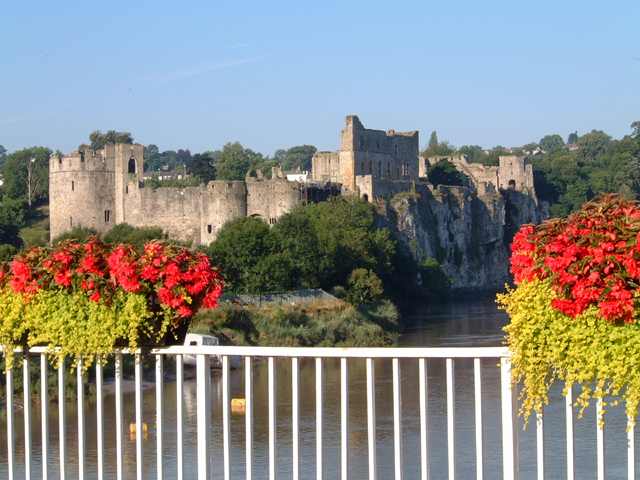
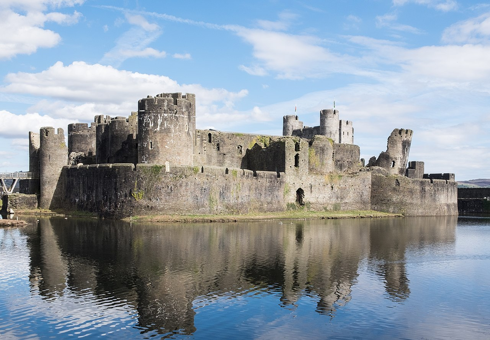

Chepstow or Sriguil Castle from the 1816 Wye bridge
Le château de Cheptow/Striguil vue de la Wye
Version Haydn
Mélodie populaire originale
Retour à "Emgann Sant Kast"


"Red glows the forge in Striguil's bounds, |
"Voici donc embrasées les forges de Striguil |
|
[1] Les Gallois, habitant un pays montagneux et ne possédant qu'une race de chevaux inférieure, étaient généralement incapables d'affronter le choc de la cavalerie normande. Parfois, cependant, ils réussissaient à repousser les envahisseurs; et les vers suivants célèbrent une défaite de Clare, comte de Striguil et Pembroke, et de Neville, baron de Chepstow, marquis de Monmouthshire. Rhymney est un ruisseau qui sépare les provinces de Montmouth et de Glamorgan ; Caerphilly, le théâtre de la bataille supposée, est une vallée sur ses rives, digne des ruines d'un château très ancien. |
[1] The Welsh, inhabiting a mountainous country, and possessing only an inferior breed of horses, were usually unaable to encounter the shock of the Norman cavalry. Occasionally, however, they were successful in repelling the invaders; and the following verses celebrate a defeat of Clare, Earl of Striguil and Pembroke, and of Neville, Baron of Chepstow, Lords-Marchers of Monmouthshire Rhymney is a stream which divides the country of Montmouth and Glamorgan; Caerphilly, the scene of the supposed battle, is a vale upon its banks, dignified by the ruins of a very ancient castle. |
